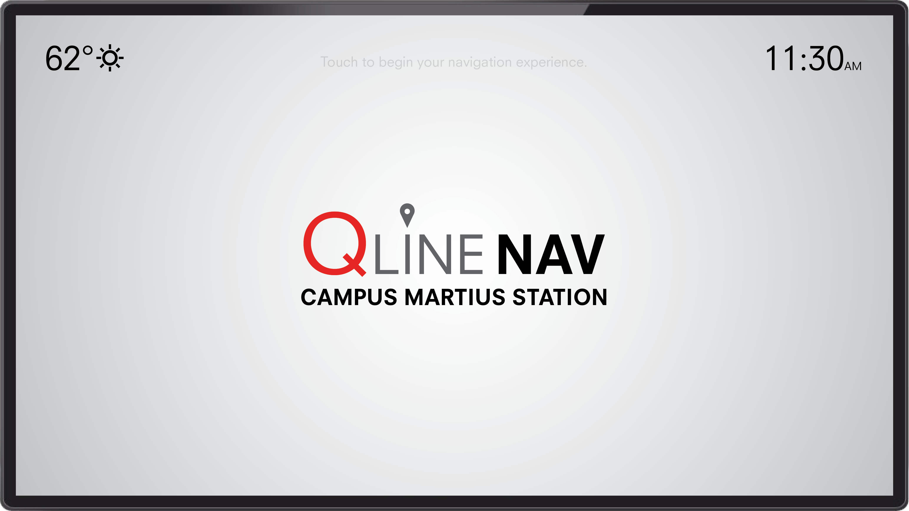
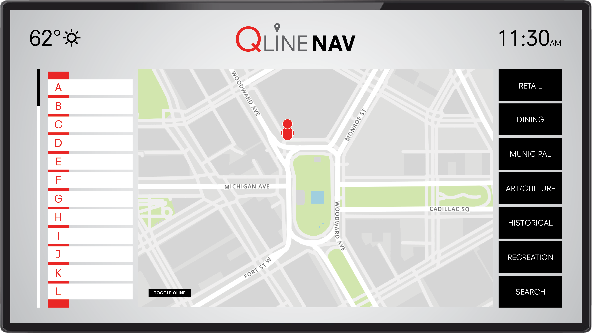
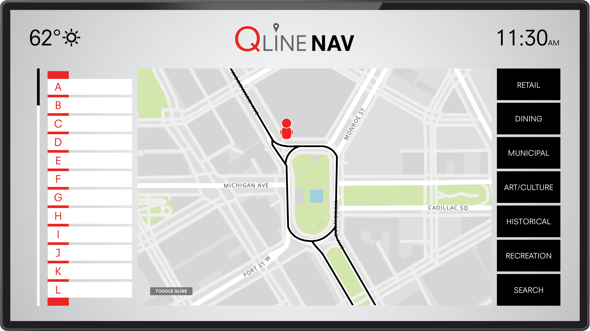
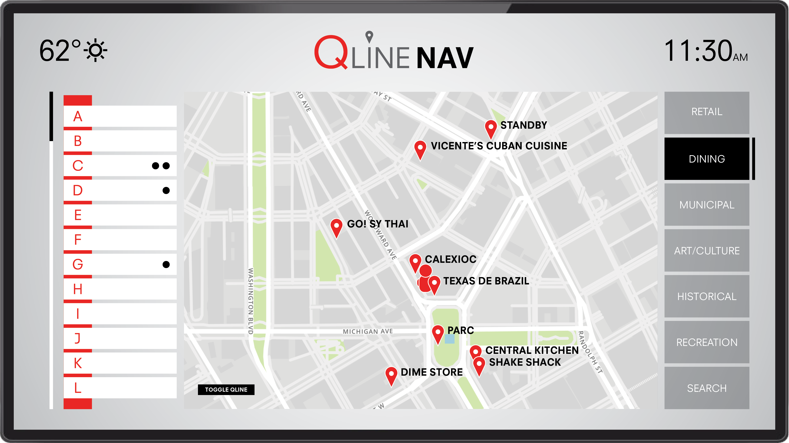
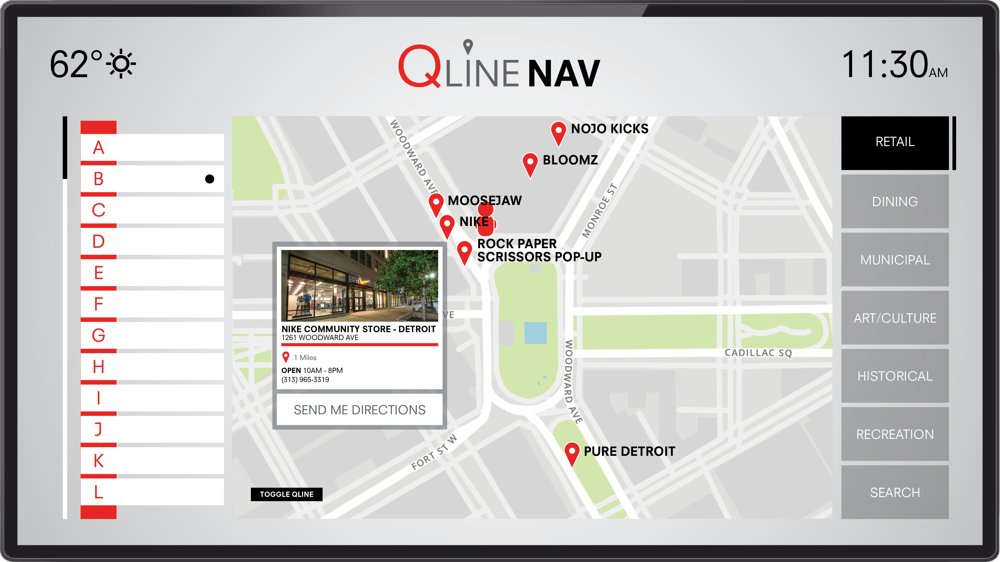
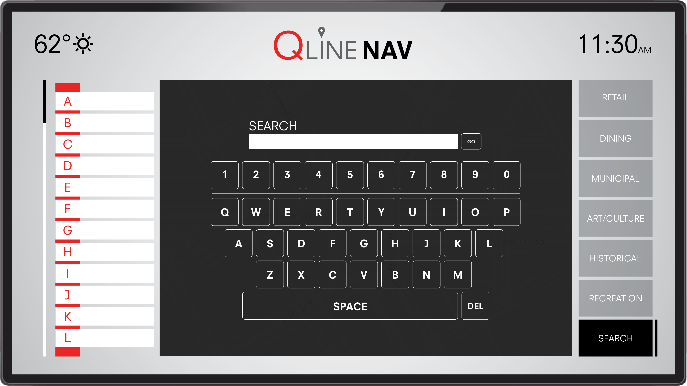
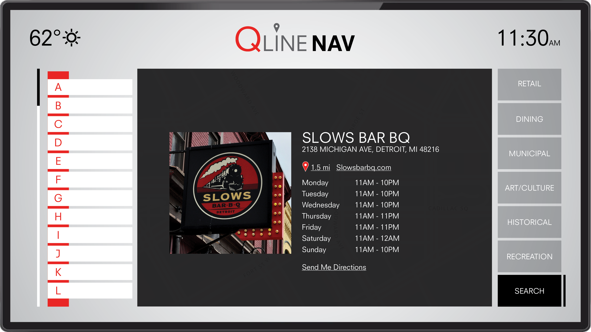

OVERVIEW
QLine Nav is a 32in. touchscreen interface installed on each of the 20 QLine stations recently built along Detroit's Woodward Ave. This application is designed to assist residents, students, tourists and visitors alike as they navigate the QLine and the surrounding areas. The QLine was constructed to make Woodward and downtown Detroit more accessible by providing quick and effective public transportation, as well as attract business and attention to the area. This application will further supplement these goals by providing a user friendly, easily accessible, hands-on navigation experience.
USER INTERFACE